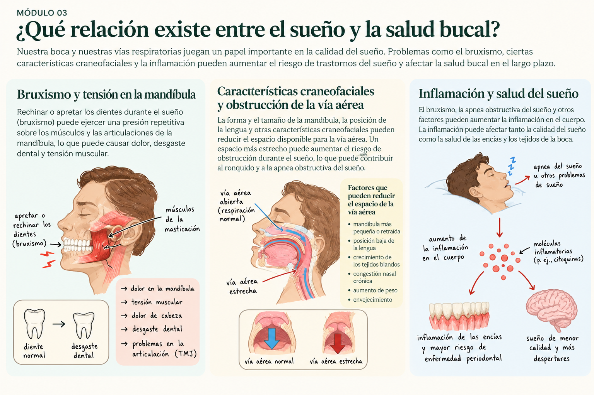

¿Qué relación existe entre el sueño y la salud bucal?
La salud de nuestra boca y la calidad de nuestro sueño están relacionadas. Conocer esta conexión puede ayudarnos a reconocer señales importantes y buscar atención cuando sea necesario.
La conexión entre nuestra boca y el sueño
Mientras dormimos, nuestros músculos, mandíbula y vías respiratorias desempeñan funciones importantes. Algunas condiciones relacionadas con la boca pueden afectar nuestro descanso, mientras que ciertos trastornos del sueño también pueden influir en nuestra salud bucal.
Tres aspectos importantes de esta relación son el bruxismo, las características craneofaciales que pueden dificultar la respiración y la inflamación.
Cómo se relacionan el sueño y la salud bucal
Esta ilustración muestra cómo rechinar los dientes, algunas características de la mandíbula y las vías respiratorias, y los procesos inflamatorios pueden relacionarse con nuestra salud y descanso.

¿Qué es el bruxismo?
El bruxismo consiste en la actividad repetitiva de los músculos de la mandíbula, que puede incluir rechinar o apretar los dientes. Puede ocurrir durante el sueño o mientras estamos despiertos.
Algunas personas pueden experimentar dolor mandibular, tensión muscular o desgaste de los dientes. Si notas estos síntomas, un dentista puede evaluar sus posibles causas y recomendarte qué hacer.
¿Cómo puede afectar la mandíbula a nuestra respiración?
La forma y posición de la mandíbula, la lengua y otras estructuras de la boca pueden influir en el espacio disponible para respirar mientras dormimos.
Cuando las vías respiratorias se estrechan o se obstruyen repetidamente durante el sueño, puede aparecer una condición llamada apnea obstructiva del sueño. Algunos síntomas incluyen ronquidos fuertes, pausas en la respiración y somnolencia durante el día.
Si tú o alguien cercano ha notado estos síntomas, es importante hablar con un médico. La apnea del sueño requiere una evaluación médica para su diagnóstico.
¿Qué papel tiene la inflamación?
La inflamación es una respuesta natural del cuerpo ante lesiones, infecciones y otros factores. Sin embargo, cuando es persistente, puede contribuir a distintos problemas de salud.
La apnea obstructiva del sueño se ha relacionado con procesos inflamatorios en el organismo. Al mismo tiempo, las enfermedades de las encías también involucran inflamación.
Aunque estas condiciones pueden estar relacionadas, esto no significa que una necesariamente cause la otra. Cuidar tanto el sueño como la salud bucal es importante para nuestro bienestar general.
¿Cómo puede ayudar tu dentista?
Los dentistas pueden identificar señales como desgaste dental, molestias en la mandíbula y ciertas características de la boca que podrían justificar una evaluación adicional.
También pueden preguntar sobre ronquidos, problemas para dormir y somnolencia durante el día. Si sospechan un trastorno respiratorio del sueño, pueden recomendar una evaluación con un médico.
En algunos pacientes con apnea obstructiva del sueño diagnosticada, los dentistas capacitados pueden participar en el tratamiento mediante dispositivos orales, en coordinación con el equipo médico.
¿Cuándo deberías buscar ayuda?
Considera hablar con un dentista si rechinas los dientes, te despiertas con dolor en la mandíbula o has notado desgaste dental.
Habla con un médico si tienes ronquidos fuertes, pausas respiratorias observadas, despertares con sensación de ahogo o somnolencia frecuente durante el día.
Si tienes dudas sobre tu sueño, puedes comenzar con nuestro cuestionario educativo.
Conoce tu sueño →